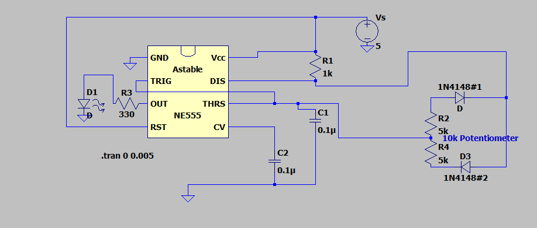

Key Visuals


Full LTSpice schematics and simulations are included in the report below.
Analog Design • 555 Timer • PWM • LTSpice • Instrumentation
I designed, built, and tested a PWM LED dimmer using an NE555 timer in a modified astable configuration. A potentiometer varied the output duty cycle to control LED brightness while maintaining continuous switching operation.
I also analyzed and tested the 555 timer in both monostable and astable configurations to verify timing behavior and connect the theoretical timing equations with measured circuit performance.

Full LTSpice schematics and simulations are included in the report below.